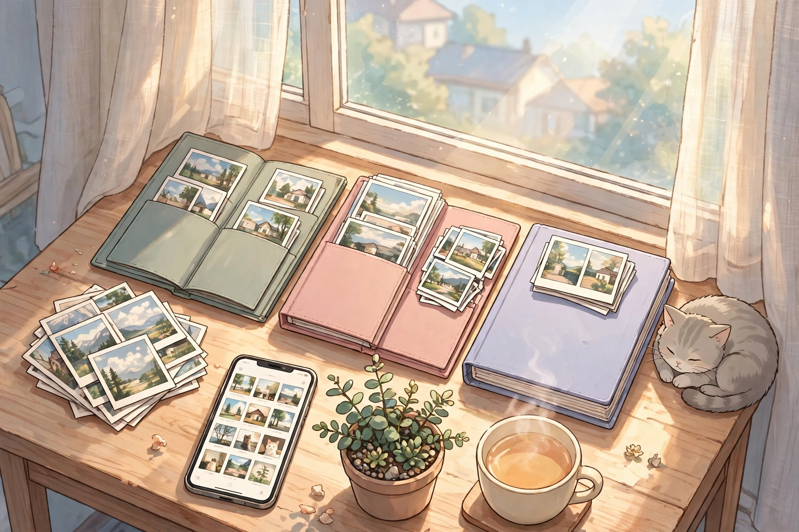

2026年11月28日｜キーワード：AI 写真 整理 アルバム
AIに写真の整理を任せると、たまった写真が3つのアルバムに分かれる
スマートフォンの中に、写真がどんどんたまっていく。旅行で撮った景色、猫の写真、季節の花の写真。撮るときは楽しいのに、あとから見返そうとすると「あの写真、どこに入っていたっけ」と探すところから始まります。運営者も同じです。お出かけや旅行の写真、猫の写真、花の見頃の写真が、撮った順に並んでいるだけで、見たい1枚になかなかたどり着けません。そこで運営者が頼んでいるのが、AIに「写真の整理の仕組みを作ってもらう」やり方です。写真を「残す・アルバムにする・見直す」の3つの箱に分けて、アルバムの名前と順番を決めてもらい、月1回の見直しの日を決める。この3つの流れで、写真は「たまるだけのもの」から「見返せるもの」に変わります。
ステップ1：写真を「残す・アルバムにする・見直す」の3つの箱に分ける
整理の最初の一歩は、写真を3つの箱に分けることです。箱は「残す」「アルバムにする」「見直す」の3つです。「残す」は、そのまま置いておく写真。「アルバムにする」は、見返したい写真。「見直す」は、似た写真が何枚もあるときの、どれを残すか決めかねている写真です。分け方は、写真を1枚ずつ開いて決めるのではなく、まず写真の一覧をAIに渡します。たとえば「11月の旅行の写真は、景色が20枚、食事が8枚、猫が5枚」というように、日付と場所と内容のメモを箇条書きで渡します。運営者の場合、旅行の写真なら「米子の旅・10月・景色と食事」、猫の写真なら「猫・11月・昼寝とごはん」というように、月と場所と内容の3つをメモにします。AIには「この一覧を、3つの箱に分けるための分け方の案を作って」と頼みます。分け方の案ができたら、その案にそって写真を分けていきます。1枚ずつ悩むのではなく、箱の分け方を先に決めるのが、続けやすいやり方です。
ステップ2：アルバムの名前と順番を決めてもらう
3つの箱に分けたら、次は「アルバムの名前と順番を決めてもらう」ことです。アルバムは、旅行ごと、季節ごと、テーマごとの3つの作り方があります。運営者の場合、旅行の写真は旅行ごとのアルバムに、猫の写真は月ごとのアルバムに、季節の花の写真は季節ごとのアルバムにしています。AIには、分け終わった写真の一覧を渡して「アルバムの名前と、並べる順番の案を作って」と頼みます。名前は「2026年10月・米子の旅」「2026年11月・猫の昼寝」というように、日付と内容がひと目で分かる形にしてもらいます。順番は、日付の順に並べてもらいます。アルバムの名前と順番が決まると、あとから見返すときに「あの旅行の写真は、このアルバム」と、探す場所が決まります。名前と順番を決めるのは、写真をしまう作業ではなく、次に見返すときの「地図」を作る作業です。
ステップ3：月1回の見直しの日を決めて、増えた分だけ整理する
アルバムができたら、最後に「月1回の見直しの日を決めて、増えた分だけ整理する」ことです。写真は、放っておくとまたたまります。運営者の場合、月の終わりに見直しの日を1日決めています。その日に、その月に増えた写真だけを、ステップ1の3つの箱に分けます。増えた分だけなので、時間は長くかかりません。見直しの日は、カレンダーに「写真の整理の日」として入れておきます。朝のまとめの時間に、見直しの日が近いことを思い出せる形にしておくのも、続けやすいやり方です。見直しの日に、見直す箱に入れた写真の扱いも決めます。似た写真は、その場で1枚に絞ります。絞った写真は、アルバムに入れるか、そのまま置いておくかを決めます。月1回の見直しの日があると、写真は「たまるだけのもの」ではなく、「見返せるもの」として残っていきます。
写真の整理の頼み方（そのまま使える形）
写真の整理を頼むときは、写真の一覧と、分けたい箱の数を一緒に伝えます。下の頼み方を、そのままコピペして使えます。
写真の整理の仕組みを作ってください。まず、整理したい写真の一覧を伝えます。11月の写真は、旅行の景色が20枚、食事が8枚、猫が5枚、季節の花が6枚です。まず、この一覧を「残す・アルバムにする・見直す」の3つの箱に分けるための分け方の案を作ってください。次に、アルバムの名前と、並べる順番の案を作ってください。名前は日付と内容がひと目で分かる形にして、順番は日付の順にしてください。最後に、月1回の見直しの日の決め方と、その日にやることを3つまでにまとめてください。効果や成果を言い切る表現は使わず、写真の整理の進め方の範囲で書いてください。分からないことは「未確認」と書いてください。
最初は写真の一覧を箇条書きにして、3つの箱への分け方の案を作ってもらうところから始めるのが続けやすいやり方です。写真を「残す・アルバムにする・見直す」の3つの箱に分けて、アルバムの名前と順番を決めてもらい、月1回の見直しの日を決める。この3つの流れが回り始めると、写真は「たまるだけのもの」ではなく、「見返せるもの」になります。この3つの流れは、運営者が実際に続けているやり方です。旅行と猫と季節の花の写真が、アルバムの名前で探せるようになると、見返したい1枚にすぐたどり着けます。
この記事の写真の整理の仕組みは、博士みゅうの「放っておいても動く仕組み」の中で回っています。旅行の計画の立て方は旅行の計画の記事で、1週間の振り返りのまとめ方は週間のレポートの記事で紹介しています。
入力場所は Instagram の固定投稿で案内しています